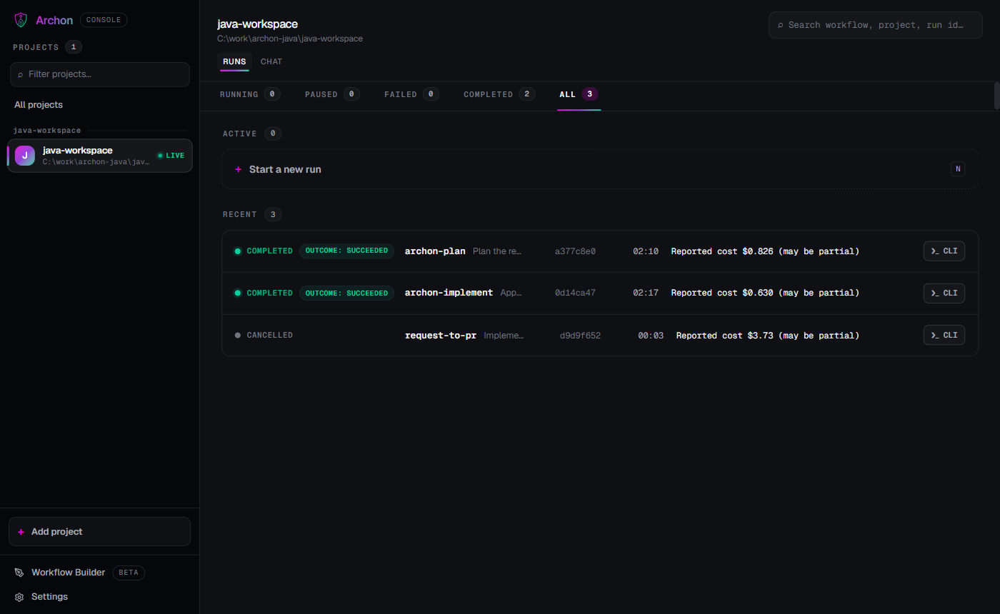
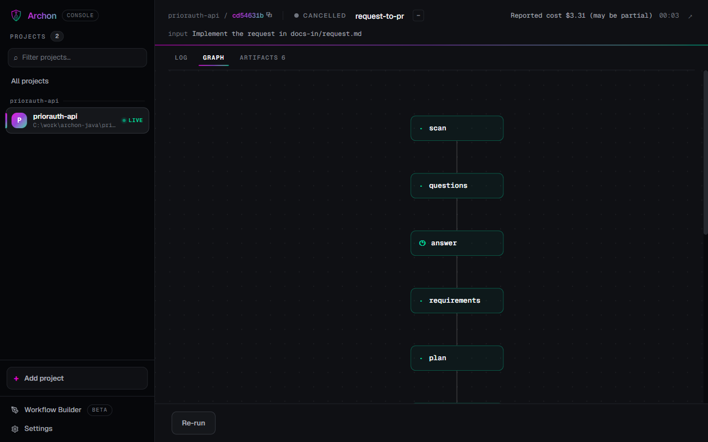

Set up Archon: a team workspace around your repo, and what every file is for.
Install once per machine, then make a team workspace: ten small files at its root, and the code repo cloned inside it. That is the whole setup. This page does both on the course's Spring Boot repo with real output from Archon 0.13.2, including the two Windows snags the course hit. Next: run one request through it.
Install Archon and an agent
One binary, plus the agent it drives. Archon brings no model: it runs Claude Code (or Codex, Pi) with your own login.
| You need | Why | Check |
|---|---|---|
| Claude Code, signed in | the agent every AI node runs | claude --version, then claude once to sign in |
| git | the workspace and the code repo, branches; on Windows also Git Bash, which runs every bash: node | git --version |
| JDK 21 + Maven 3.9 | only for this course's Java repo | java -version shows 21 |
irm https://archon.diy/install.ps1 | iex
curl -fsSL https://archon.diy/install | bash
+---------------------------------------+
| Archon CLI Installer |
| Windows (PowerShell) |
+---------------------------------------+
[INFO] Detecting architecture...
[OK] Architecture: x64
[INFO] Version : latest
[INFO] Download URL: https://github.com/coleam00/Archon/releases/latest/download/archon-windows-x64.exe
[INFO] Downloading binary...
[OK] Downloaded successfully
[INFO] Verifying checksum...
[OK] Checksum verified
[INFO] Creating install directory: C:\Users\you\.archon\bin
[INFO] Installing to C:\Users\you\.archon\bin\archon.exe...
[OK] Installed to C:\Users\you\.archon\bin\archon.exe
[OK] Added C:\Users\you\.archon\bin to your user PATH
[INFO] Restart your terminal (or open a new one) for the PATH change to take effect
[INFO] Verifying installation...
Archon CLI v0.13.2 Platform: win32-x64 Build: binary Database: sqlite Git commit: b8d01782
[OK] Installation complete!
[INFO] Adding a provider connects Archon to your agent CLI or SDK; it does not install that CLI.
[INFO] Adding providers: claude
Installed coleam00/Archon/plugins/provider-claude from github.com/coleam00/Archon v0.13.2 (commit b8d01782fac602231a95685dabf42cc0edb0f1c1)
C:\Users\you\.archon\plugins\archon-provider-claude.exe sha256 3ee501bc09e33ac5118d2c5e994886f615c21e5719a730f2496cdb45ead716f4
This runs code published by coleam00.
[OK] Providers installed: claude
Get started:
archon workflow list
archon workflow run archon-investigate "Why does the test suite fail?"
Note: Open a new terminal window so the updated PATH takes effect.checksums.txt, copies it to ~/.archon/bin, adds that folder to your user PATH (open a new terminal to pick it up) and asks which providers to add. To skip the question: & ([scriptblock]::Create((irm https://archon.diy/install.ps1))) -Providers claude on Windows, curl -fsSL https://archon.diy/install | bash -s -- --providers claude on macOS. Homebrew: brew install coleam00/archon/archon.Check the install: version and doctor
Two commands that tell you everything is wired before you spend a token.
archon version archon doctor
Archon CLI v0.13.2 Platform: win32-x64 Build: binary Database: sqlite Git commit: b8d01782 archon doctor — verifying your setup ✓ Config files: valid (default assistant: claude) ✓ Installed providers: claude (0.13.2) ✓ claude: Claude binary: C:\Users\you\.local\bin\claude.exe (via autodetect, spawns OK) ○ GitHub App: App mode not configured ✓ Assistant login: claude: usable ✓ Provider support: claude is supported ✓ Database: reachable (sqlite); schema created by 0.13.2, last applied by 0.13.2 ✓ Folder project: "java-workspace" (runs in place) — 1 contained repo(s): priorauth-api ○ AI credentials: none connected — run: archon ai login <vendor> or archon ai key set <vendor> ✓ Workspace: C:\Users\you\.archon is writable ✓ Bundled defaults: 25 workflow(s), 27 command(s) loaded ○ Archon skill: not installed (run `archon skill add .` if you use Claude Code or Codex skills) ○ Telemetry: disabled (ARCHON_TELEMETRY_DISABLED=1) ○ Slack: no SLACK_BOT_TOKEN set ○ Telegram: no TELEGRAM_BOT_TOKEN set All checks passed.
| Line | What it means |
|---|---|
claude: Claude binary … (via autodetect, spawns OK) | Archon found Claude Code and started it |
Assistant login: claude: usable | Claude Code's own login (claude.ai) works; no API key needed |
Database: reachable (sqlite) | ~/.archon/archon.db; set DATABASE_URL for PostgreSQL |
Bundled defaults: 25 workflow(s), 27 command(s) | the sdlc pack inside the binary |
○ lines | optional pieces not set up (GitHub App, chat platforms, the Archon skill): fine for this course |
ANTHROPIC_API_KEY is set in your shell, Claude Code (and so every Archon run) may use that key instead of your claude.ai login. The course cleared it for every run: $env:ANTHROPIC_API_KEY=$null in PowerShell, unset ANTHROPIC_API_KEY on macOS.Turn telemetry off (or decide to keep it)
Archon sends anonymous usage events by default. Know that before your first run.
[Environment]::SetEnvironmentVariable('ARCHON_TELEMETRY_DISABLED', '1', 'User')
$env:ARCHON_TELEMETRY_DISABLED = '1'
archon telemetry statusecho 'export ARCHON_TELEMETRY_DISABLED=1' >> ~/.zshrc export ARCHON_TELEMETRY_DISABLED=1 archon telemetry status
Telemetry: disabled Reason: ARCHON_TELEMETRY_DISABLED=1 is set Distinct ID: (a random install id) Host: https://us.i.posthog.com Key source: embedded
custom), node counts, provider and model ids, outcome, durations and usage totals. Never code, prompts, file paths or your workflow names. DO_NOT_TRACK=1 works too. The course ran with it off.Windows: make sure Archon finds Git Bash
Every bash: node and every until_bash check runs under bash, on Windows too. Archon looks for Git Bash in the usual places only.
On this machine Git for Windows was on another drive. A one-node workflow showed what happens; archon validate does not catch it:
[hello] Started [hello] Failed: Bash node 'hello' failed: bash executable not found at 'C:\Program Files\Git\bin\bash.exe'. Set ARCHON_BASH_PATH if Git Bash is installed elsewhere (e.g. user-scope installer at %LOCALAPPDATA%\Programs\Git\bin\bash.exe). Error: Workflow failed: Workflow did not complete successfully
[Environment]::SetEnvironmentVariable('ARCHON_BASH_PATH', 'D:\Program Files\Git\bin\bash.exe', 'User')%ProgramFiles%\Git\bin\bash.exe, %ProgramFiles%\Git\usr\bin\bash.exe, the x86 Program Files, %LOCALAPPDATA%\Programs\Git\bin\bash.exe and scoop. With ARCHON_BASH_PATH set, the same probe printed Workflow completed successfully. macOS and Linux use the bash on PATH.Make the team's workspace, and clone the repo into it
Like the AI-DLC course: a folder of its own around the code. It is a git repo for the team's files; the code repo is cloned inside it and keeps its own git.
mkdir C:\work\java-workspace cd C:\work\java-workspace git init -b main git clone --single-branch --no-tags https://github.com/varasrinivas/aidlc-priorauth-api priorauth-api
mkdir -p ~/work/java-workspace cd ~/work/java-workspace git init -b main git clone --single-branch --no-tags https://github.com/varasrinivas/aidlc-priorauth-api priorauth-api
. .. .archon .git .gitattributes .gitignore CLAUDE.md docs-in priorauth-api scripts == priorauth-api d9aa178 (HEAD -> main, origin/main, origin/HEAD) priorauth-api 1.0.2: pending list for the reviewer screen 11: <version>4.1.1</version> 17: <version>1.0.2</version>
java-workspace/ the team's workspace: git init, branch main
├── .git/
└── priorauth-api/ the code repo: cloned, its own .git, main at v1.0.2
├── pom.xml
└── src/ …--no-tags leaves out the v1.1.0 tag, the answer key: an agent that scans the repo would otherwise find it. The workspace is an Archon folder project: runs start at its root and work in place, and the agent does the git in priorauth-api. A second repo is one more git clone here (the course's two-repo run). The other layout, with .archon/ inside the code repo and a worktree per run, is compared in the introduction, step 10.Write the team's files
Ten small files the team owns, at the workspace root: the workflow and its two prompts, Archon's config, the agent's rules, the one check, the .gitignore, the request.
New-Item -ItemType Directory -Force .archon, .archon\workflows\team\request-to-pr, .archon\workflows\team\request-to-pr\commands, docs-in, scripts | Out-Null
[IO.File]::WriteAllText("$PWD\.archon\config.yaml", (@'
# Archon settings for this workspace (committed). It is a folder project: no worktree settings apply.
assistant: claude # workflows use Claude Code unless a workflow or node says otherwise
'@ -replace "`r", "") + "`n")
[IO.File]::WriteAllText("$PWD\.archon\workflows\team\request-to-pr\commands\implement.md", (@'
---
description: Implement the approved plan in priorauth-api; one pass of the implement loop.
---
The request: $USER_MESSAGE
Implement the approved plan in $ARTIFACTS_DIR/plan.md against $ARTIFACTS_DIR/requirements.md,
following CLAUDE.md. Notes from the person who approved the plan: $approve-plan.output.text
If an earlier pass ran, this is what it reported (fix what it left failing):
$LOOP_PREV_OUTPUT
In priorauth-api: switch to the branch request-age/<slug> named in CLAUDE.md's pattern (create it
from main if it does not exist yet), make the change, and commit it there with a message that names
the request and the requirement IDs. Do not commit in the workspace folder and do not push.
Run ./scripts/verify.sh from the workspace root. Write $ARTIFACTS_DIR/implementation.md: the branch,
the files changed, the tests added, the commit, the verify result, and what you skipped or did not
check. Return the verify result and the commit hash.
'@ -replace "`r", "") + "`n")
[IO.File]::WriteAllText("$PWD\.archon\workflows\team\request-to-pr\commands\scan.md", (@'
---
description: Read the request and the code; write what a planner needs to know. Changes nothing.
---
The request: $USER_MESSAGE
Read the request file it names (in docs-in/), then the code in priorauth-api/ (the repo named in
CLAUDE.md): the build file, the entry points, the classes the request touches, the tests, the
configuration and the data files. Check the repo's current branch and its tags.
Write $ARTIFACTS_DIR/scan.md with:
- what the repo is and how it is built and tested (the verify command from CLAUDE.md);
- the classes and files the request touches, with one line each on what they do now;
- what is missing for the request (data, rules, configuration);
- risks: callers or tests that a change could break.
Do not change any file in priorauth-api or in the workspace. Return a five-line summary.
'@ -replace "`r", "") + "`n")
[IO.File]::WriteAllText("$PWD\.archon\workflows\team\request-to-pr\request-to-pr.yaml", (@'
name: request-to-pr
description: >-
Take one request from docs-in/ to a pushed branch in priorauth-api: scan the code, ask the
questions a person must answer, write the requirements (revised until approved), plan, implement
until ./scripts/verify.sh passes, review, and push after a final approval. Run it from the
workspace root (a folder project): Archon makes no worktree or branch here, the agent branches and
commits in priorauth-api itself. Use for one small change to priorauth-api.
NOT for: bugs whose cause is unknown (use archon-investigate first).
nodes:
# ── Plan: read before anything is decided ─────────────────────────────
- id: scan
command: scan
mutates_checkout: false
- id: questions
depends_on: [scan]
mutates_checkout: false
prompt: |
The request: $USER_MESSAGE
The scan of the repo is in $ARTIFACTS_DIR/scan.md.
List only the questions a person must answer before requirements can be written
(rules, numbers, names, data sources). Number them; give each lettered options
(A, B, C, X = other) and say which you would pick and why. Write them to
$ARTIFACTS_DIR/questions.md and return the same text.
output_format:
type: object
properties:
questions: { type: string }
required: [questions]
additionalProperties: false
- id: answer
depends_on: [questions]
wait:
attention: |
Answer these before requirements are written (one message, e.g. "1 A: ... 2 B: ..."):
$questions.output.questions
- id: requirements
depends_on: [answer]
loop_group:
max_iterations: 3
until_bash: 'decision=$review-requirements.output.decision; [ "$decision" = "approve" ]'
nodes:
- id: write-requirements
mutates_checkout: false
prompt: |
The request: $USER_MESSAGE
Scan: $ARTIFACTS_DIR/scan.md Questions: $ARTIFACTS_DIR/questions.md
The person's answers: $answer.output.text
Changes asked for on the previous version, if any: $LOOP_PREV.review-requirements.output.text
Write (or revise) $ARTIFACTS_DIR/requirements.md: numbered functional requirements
(FR1...), non-functional ones (NFR1...), assumptions (A-01...), and a worked check on
the sample data as of 2026-10-13. Return a short summary of what it says, and of what
changed if this is a revision.
- id: review-requirements
depends_on: [write-requirements]
wait:
form: approval
attention: |
Approve the requirements, or reject with the changes you want.
$write-requirements.output
# ── Build: plan, approve, implement until the checks pass ─────────────
- id: plan
depends_on: [requirements]
mutates_checkout: false
prompt: |
Read $ARTIFACTS_DIR/requirements.md and the code. Write $ARTIFACTS_DIR/plan.md:
the files to add or change, the tests to add, and the order. Follow CLAUDE.md.
output_format:
type: object
properties:
summary: { type: string }
files: { type: array, items: { type: string } }
tests: { type: string }
required: [summary, files, tests]
additionalProperties: false
- id: approve-plan
depends_on: [plan]
wait:
form: approval
attention: |
Approve the code plan before any code is written.
$plan.output.summary
Tests: $plan.output.tests
- id: stop-plan
depends_on: [approve-plan]
when: "$approve-plan.output.decision == 'reject'"
cancel: The code plan was rejected.
- id: implement
depends_on: [approve-plan]
when: "$approve-plan.output.decision == 'approve'"
loop:
command: implement
until_bash: ./scripts/verify.sh
max_iterations: 3
fresh_context: true
- id: checks
depends_on: [implement]
bash: |
./scripts/verify.sh && echo "verify: passed"
echo "== priorauth-api: on $(git -C priorauth-api branch --show-current)"
git -C priorauth-api log --oneline main..HEAD
git -C priorauth-api diff --stat main...HEAD
git -C priorauth-api status --short
# ── Review: a second reader, then a person ────────────────────────────
- id: review
depends_on: [checks]
mutates_checkout: false
prompt: |
Review the change on priorauth-api's branch against $ARTIFACTS_DIR/requirements.md and
$ARTIFACTS_DIR/plan.md (git -C priorauth-api diff main...HEAD). Do not edit anything.
Check each FR has code and a test, and look for anything the plan did not name.
Write $ARTIFACTS_DIR/review.md.
output_format:
type: object
properties:
verdict: { type: string, enum: [READY, NOT-READY] }
findings: { type: string }
required: [verdict, findings]
additionalProperties: false
- id: approve-change
depends_on: [review]
wait:
form: approval
attention: |
Review verdict: $review.output.verdict
$review.output.findings
Checks:
$checks.output
Approve to push the branch, or reject to stop.
- id: stop-change
depends_on: [approve-change]
when: "$approve-change.output.decision == 'reject'"
cancel: The change was rejected at review.
# ── Ship ──────────────────────────────────────────────────────────────
- id: push
depends_on: [approve-change]
when: "$approve-change.output.decision == 'approve'"
bash: |
b=$(git -C priorauth-api branch --show-current)
if [ "$b" != main ] && [ -n "$(git -C priorauth-api log --oneline main..HEAD)" ]; then
git -C priorauth-api push -u origin "$b" 2>&1
echo "priorauth-api: open the PR $b -> main"
else
echo "priorauth-api: nothing to push"
fi
'@ -replace "`r", "") + "`n")
[IO.File]::WriteAllText("$PWD\.gitattributes", (@'
# verify.sh runs under bash: keep it LF even where git converts to CRLF.
*.sh text eol=lf
*.cmd text eol=crlf
'@ -replace "`r", "") + "`n")
[IO.File]::WriteAllText("$PWD\.gitignore", (@'
# The code repo is a git repo of its own, cloned here: not part of the workspace repo.
/priorauth-api/
'@ -replace "`r", "") + "`n")
[IO.File]::WriteAllText("$PWD\CLAUDE.md", (@'
# java workspace
The team's workspace for the reviewer screen's backend. One code repo, a git repo of its own with its own remote,
cloned into this folder (this folder's own git repo ignores it):
| Repo | What it is | Verify with | Branch pattern | PR base |
|------------------|----------------------------------------------------------------------------------|-----------------------|--------------------|---------|
| `priorauth-api/` | the Spring Boot 4.1 REST API on Java 21 (Maven) the reviewer screen reads (`GET /requests/pending`) | `./scripts/verify.sh` | request-age/<slug> | main |
This folder is an Archon **folder project**: the team's workflows live in `.archon/workflows/`, requests in
`docs-in/`. Archon runs here in place: it makes no worktree, branch or pull request. The workflow and you do the
git, in the code repo.
## How we run Archon here
- One request = one run of `request-to-pr` = one branch in priorauth-api = one PR. Name the request file in the run message.
- Tests only through `./scripts/verify.sh` (`scripts\verify.cmd` by hand on Windows), from this folder; never ad hoc.
- Git in the code repo: branch `request-age/<slug>` from `main` in priorauth-api and commit there. Never commit code
in this workspace folder, never push (the workflow's last node does).
- Never add a dependency to pom.xml without saying so in the plan.
- Write what a person must read (scan, questions, requirements, plan, review) into `$ARTIFACTS_DIR`, not into a repo.
- Before proposing a version or a tag, check the repo's tags and the version in its pom.xml.
## How to change code
1. Ask, don't assume. If something is unclear, put it in the questions; state the assumptions you make.
2. Smallest complete change. Prefer what already exists (this codebase, the JDK, an installed dependency) over new code; no features, options or abstractions nobody asked for. Deleting beats adding.
3. Surgical. Touch only what the approved plan names and match the surrounding style. Mention unrelated problems, don't fix them.
4. Prove it. New branching, parsing, money or security logic gets a test; run the verify script before saying done.
5. Never cut validation at trust boundaries, error handling that prevents data loss, security, accessibility, or anything the request asked for.
6. End each summary with what you skipped or did not check, and any risk.
'@ -replace "`r", "") + "`n")
[IO.File]::WriteAllText("$PWD\docs-in\request.md", (@'
# Request age on the pending list (API)
From: Ravi Menon (Nurse Manager, Utilization Management) · Slack #prior-auth-platform · Tue 13 Oct, 09:10
> The nightly report shows the AGE column now, thank you. The reviewer screen still shows nothing, and it reads from
> priorauth-api. Can the pending list the API returns carry the same business-day age and the over-5 flag, so the
> screen can show it? Same rule as the report: weekends and our holidays do not count. Nothing else changes.
Attachments: none. Repo: priorauth-api (the API behind the reviewer screen).
'@ -replace "`r", "") + "`n")
[IO.File]::WriteAllText("$PWD\scripts\verify.sh", (@'
#!/usr/bin/env bash
# The one verification command for this workspace. Archon runs it in loop until_bash and bash nodes.
set -euo pipefail
cd "$(dirname "$0")/../priorauth-api"
mvn -q test
'@ -replace "`r", "") + "`n")
[IO.File]::WriteAllText("$PWD\scripts\verify.cmd", "@echo off`r`nrem Windows twin of verify.sh, for running the checks by hand in cmd or PowerShell.`r`ncd /d `"%~dp0..\priorauth-api`" && mvn -q test`r`n")mkdir -p .archon .archon/workflows/team/request-to-pr .archon/workflows/team/request-to-pr/commands docs-in scripts
cat > .archon/config.yaml <<'EOF'
# Archon settings for this workspace (committed). It is a folder project: no worktree settings apply.
assistant: claude # workflows use Claude Code unless a workflow or node says otherwise
EOF
cat > .archon/workflows/team/request-to-pr/commands/implement.md <<'EOF'
---
description: Implement the approved plan in priorauth-api; one pass of the implement loop.
---
The request: $USER_MESSAGE
Implement the approved plan in $ARTIFACTS_DIR/plan.md against $ARTIFACTS_DIR/requirements.md,
following CLAUDE.md. Notes from the person who approved the plan: $approve-plan.output.text
If an earlier pass ran, this is what it reported (fix what it left failing):
$LOOP_PREV_OUTPUT
In priorauth-api: switch to the branch request-age/<slug> named in CLAUDE.md's pattern (create it
from main if it does not exist yet), make the change, and commit it there with a message that names
the request and the requirement IDs. Do not commit in the workspace folder and do not push.
Run ./scripts/verify.sh from the workspace root. Write $ARTIFACTS_DIR/implementation.md: the branch,
the files changed, the tests added, the commit, the verify result, and what you skipped or did not
check. Return the verify result and the commit hash.
EOF
cat > .archon/workflows/team/request-to-pr/commands/scan.md <<'EOF'
---
description: Read the request and the code; write what a planner needs to know. Changes nothing.
---
The request: $USER_MESSAGE
Read the request file it names (in docs-in/), then the code in priorauth-api/ (the repo named in
CLAUDE.md): the build file, the entry points, the classes the request touches, the tests, the
configuration and the data files. Check the repo's current branch and its tags.
Write $ARTIFACTS_DIR/scan.md with:
- what the repo is and how it is built and tested (the verify command from CLAUDE.md);
- the classes and files the request touches, with one line each on what they do now;
- what is missing for the request (data, rules, configuration);
- risks: callers or tests that a change could break.
Do not change any file in priorauth-api or in the workspace. Return a five-line summary.
EOF
cat > .archon/workflows/team/request-to-pr/request-to-pr.yaml <<'EOF'
name: request-to-pr
description: >-
Take one request from docs-in/ to a pushed branch in priorauth-api: scan the code, ask the
questions a person must answer, write the requirements (revised until approved), plan, implement
until ./scripts/verify.sh passes, review, and push after a final approval. Run it from the
workspace root (a folder project): Archon makes no worktree or branch here, the agent branches and
commits in priorauth-api itself. Use for one small change to priorauth-api.
NOT for: bugs whose cause is unknown (use archon-investigate first).
nodes:
# ── Plan: read before anything is decided ─────────────────────────────
- id: scan
command: scan
mutates_checkout: false
- id: questions
depends_on: [scan]
mutates_checkout: false
prompt: |
The request: $USER_MESSAGE
The scan of the repo is in $ARTIFACTS_DIR/scan.md.
List only the questions a person must answer before requirements can be written
(rules, numbers, names, data sources). Number them; give each lettered options
(A, B, C, X = other) and say which you would pick and why. Write them to
$ARTIFACTS_DIR/questions.md and return the same text.
output_format:
type: object
properties:
questions: { type: string }
required: [questions]
additionalProperties: false
- id: answer
depends_on: [questions]
wait:
attention: |
Answer these before requirements are written (one message, e.g. "1 A: ... 2 B: ..."):
$questions.output.questions
- id: requirements
depends_on: [answer]
loop_group:
max_iterations: 3
until_bash: 'decision=$review-requirements.output.decision; [ "$decision" = "approve" ]'
nodes:
- id: write-requirements
mutates_checkout: false
prompt: |
The request: $USER_MESSAGE
Scan: $ARTIFACTS_DIR/scan.md Questions: $ARTIFACTS_DIR/questions.md
The person's answers: $answer.output.text
Changes asked for on the previous version, if any: $LOOP_PREV.review-requirements.output.text
Write (or revise) $ARTIFACTS_DIR/requirements.md: numbered functional requirements
(FR1...), non-functional ones (NFR1...), assumptions (A-01...), and a worked check on
the sample data as of 2026-10-13. Return a short summary of what it says, and of what
changed if this is a revision.
- id: review-requirements
depends_on: [write-requirements]
wait:
form: approval
attention: |
Approve the requirements, or reject with the changes you want.
$write-requirements.output
# ── Build: plan, approve, implement until the checks pass ─────────────
- id: plan
depends_on: [requirements]
mutates_checkout: false
prompt: |
Read $ARTIFACTS_DIR/requirements.md and the code. Write $ARTIFACTS_DIR/plan.md:
the files to add or change, the tests to add, and the order. Follow CLAUDE.md.
output_format:
type: object
properties:
summary: { type: string }
files: { type: array, items: { type: string } }
tests: { type: string }
required: [summary, files, tests]
additionalProperties: false
- id: approve-plan
depends_on: [plan]
wait:
form: approval
attention: |
Approve the code plan before any code is written.
$plan.output.summary
Tests: $plan.output.tests
- id: stop-plan
depends_on: [approve-plan]
when: "$approve-plan.output.decision == 'reject'"
cancel: The code plan was rejected.
- id: implement
depends_on: [approve-plan]
when: "$approve-plan.output.decision == 'approve'"
loop:
command: implement
until_bash: ./scripts/verify.sh
max_iterations: 3
fresh_context: true
- id: checks
depends_on: [implement]
bash: |
./scripts/verify.sh && echo "verify: passed"
echo "== priorauth-api: on $(git -C priorauth-api branch --show-current)"
git -C priorauth-api log --oneline main..HEAD
git -C priorauth-api diff --stat main...HEAD
git -C priorauth-api status --short
# ── Review: a second reader, then a person ────────────────────────────
- id: review
depends_on: [checks]
mutates_checkout: false
prompt: |
Review the change on priorauth-api's branch against $ARTIFACTS_DIR/requirements.md and
$ARTIFACTS_DIR/plan.md (git -C priorauth-api diff main...HEAD). Do not edit anything.
Check each FR has code and a test, and look for anything the plan did not name.
Write $ARTIFACTS_DIR/review.md.
output_format:
type: object
properties:
verdict: { type: string, enum: [READY, NOT-READY] }
findings: { type: string }
required: [verdict, findings]
additionalProperties: false
- id: approve-change
depends_on: [review]
wait:
form: approval
attention: |
Review verdict: $review.output.verdict
$review.output.findings
Checks:
$checks.output
Approve to push the branch, or reject to stop.
- id: stop-change
depends_on: [approve-change]
when: "$approve-change.output.decision == 'reject'"
cancel: The change was rejected at review.
# ── Ship ──────────────────────────────────────────────────────────────
- id: push
depends_on: [approve-change]
when: "$approve-change.output.decision == 'approve'"
bash: |
b=$(git -C priorauth-api branch --show-current)
if [ "$b" != main ] && [ -n "$(git -C priorauth-api log --oneline main..HEAD)" ]; then
git -C priorauth-api push -u origin "$b" 2>&1
echo "priorauth-api: open the PR $b -> main"
else
echo "priorauth-api: nothing to push"
fi
EOF
cat > .gitattributes <<'EOF'
# verify.sh runs under bash: keep it LF even where git converts to CRLF.
*.sh text eol=lf
*.cmd text eol=crlf
EOF
cat > .gitignore <<'EOF'
# The code repo is a git repo of its own, cloned here: not part of the workspace repo.
/priorauth-api/
EOF
cat > CLAUDE.md <<'EOF'
# java workspace
The team's workspace for the reviewer screen's backend. One code repo, a git repo of its own with its own remote,
cloned into this folder (this folder's own git repo ignores it):
| Repo | What it is | Verify with | Branch pattern | PR base |
|------------------|----------------------------------------------------------------------------------|-----------------------|--------------------|---------|
| `priorauth-api/` | the Spring Boot 4.1 REST API on Java 21 (Maven) the reviewer screen reads (`GET /requests/pending`) | `./scripts/verify.sh` | request-age/<slug> | main |
This folder is an Archon **folder project**: the team's workflows live in `.archon/workflows/`, requests in
`docs-in/`. Archon runs here in place: it makes no worktree, branch or pull request. The workflow and you do the
git, in the code repo.
## How we run Archon here
- One request = one run of `request-to-pr` = one branch in priorauth-api = one PR. Name the request file in the run message.
- Tests only through `./scripts/verify.sh` (`scripts\verify.cmd` by hand on Windows), from this folder; never ad hoc.
- Git in the code repo: branch `request-age/<slug>` from `main` in priorauth-api and commit there. Never commit code
in this workspace folder, never push (the workflow's last node does).
- Never add a dependency to pom.xml without saying so in the plan.
- Write what a person must read (scan, questions, requirements, plan, review) into `$ARTIFACTS_DIR`, not into a repo.
- Before proposing a version or a tag, check the repo's tags and the version in its pom.xml.
## How to change code
1. Ask, don't assume. If something is unclear, put it in the questions; state the assumptions you make.
2. Smallest complete change. Prefer what already exists (this codebase, the JDK, an installed dependency) over new code; no features, options or abstractions nobody asked for. Deleting beats adding.
3. Surgical. Touch only what the approved plan names and match the surrounding style. Mention unrelated problems, don't fix them.
4. Prove it. New branching, parsing, money or security logic gets a test; run the verify script before saying done.
5. Never cut validation at trust boundaries, error handling that prevents data loss, security, accessibility, or anything the request asked for.
6. End each summary with what you skipped or did not check, and any risk.
EOF
cat > docs-in/request.md <<'EOF'
# Request age on the pending list (API)
From: Ravi Menon (Nurse Manager, Utilization Management) · Slack #prior-auth-platform · Tue 13 Oct, 09:10
> The nightly report shows the AGE column now, thank you. The reviewer screen still shows nothing, and it reads from
> priorauth-api. Can the pending list the API returns carry the same business-day age and the over-5 flag, so the
> screen can show it? Same rule as the report: weekends and our holidays do not count. Nothing else changes.
Attachments: none. Repo: priorauth-api (the API behind the reviewer screen).
EOF
cat > scripts/verify.sh <<'EOF'
#!/usr/bin/env bash
# The one verification command for this workspace. Archon runs it in loop until_bash and bash nodes.
set -euo pipefail
cd "$(dirname "$0")/../priorauth-api"
mvn -q test
EOF
chmod +x scripts/verify.sh| File | What it is for |
|---|---|
.archon/workflows/team/request-to-pr/request-to-pr.yaml | the team's process: 15 nodes, 4 waits for people; its bash nodes run git -C priorauth-api |
…/commands/scan.md, implement.md | the prompts of the scan node and each implement pass; implement names the branch to make in priorauth-api |
.archon/config.yaml | assistant: claude; no worktree settings (a folder project has none) |
CLAUDE.md | the repo map and the team's rules; Claude Code reads it in every AI node |
scripts/verify.sh (+ verify.cmd) | the one check, run from the workspace: cd priorauth-api, then mvn -q test; the implement loop ends when it exits 0 |
.gitignore | /priorauth-api/: the code repo is not part of the workspace repo |
.gitattributes | keeps verify.sh LF: with core.autocrlf=true bash would get CRLF and fail |
docs-in/request.md | Ravi's request, named in the run message |
.claude/ folder, and the workflow names no skills:, agents: or hooks:: the only Claude Code file here is CLAUDE.md. Where skills, subagents, hooks and slash commands would go, and which nodes would see them: Claude Code in the workspace.CLAUDE.md the kitchen rules every cook reads, and verify.sh the thermometer: the dish is done when it says so, not when the cook thinks so. The workspace is the kitchen; the code repo is the pantry, stocked from its own supplier.Validate the workflow, then dry-run it
Two free checks, from the workspace root: the file parses and its references resolve; the graph walks the way you think.
archon validate workflows request-to-pr
Validating workflows in C:/work/archon-java/java-workspace request-to-pr ok Results: 1 valid, 0 with errors
archon workflow run request-to-pr --dry-run --default-stubs "Implement docs-in/request.md"
Discovery: root=C:/work/archon-java/java-workspace workflows=26 bundled=25 global=0 project=1 installed=0 Dry-run: request-to-pr STUBBED scan (command) … STUBBED questions (prompt) … PAUSED answer (wait) — durable wait … Simulation outcome: paused
--folder (Archon refuses the two together) and registers nothing; the first real run with --folder registers the workspace. Run with no name, archon validate workflows also checks the 25 bundled ones; on Windows 24 of them warn Runtime 'bun' is not available on PATH for their script: nodes. In the course run the bundled archon-plan and archon-implement ran their script nodes anyway; install Bun if a bundled workflow's script node fails.Commit the workspace, and check the code builds
Commit and push the team's files so every teammate gets them with one clone. The code repo stays out: it has its own remote.
git add -A git status --short --ignored git commit -m "The java workspace: CLAUDE.md, verify scripts, the request-to-pr workflow, the request" git remote add origin https://github.com/<org>/java-workspace git push -u origin main
.archon/config.yaml .archon/workflows/team/request-to-pr/commands/implement.md .archon/workflows/team/request-to-pr/commands/scan.md .archon/workflows/team/request-to-pr/request-to-pr.yaml .gitattributes .gitignore CLAUDE.md docs-in/request.md scripts/verify.cmd scripts/verify.sh $ git status --short --ignored !! priorauth-api/
./scripts/verify.sh
./scripts/verify.sh
… verify: passed Tests run: 1, Failures: 0, Errors: 0, Skipped: 0, Time elapsed: 3.834 s -- in com.acmehealth.priorauth.api.PendingRequestsControllerTest Tests run: 2, Failures: 0, Errors: 0, Skipped: 0, Time elapsed: 0.116 s -- in com.acmehealth.priorauth.store.RequestStoreTest
worktree.copyFiles and postCreate do not apply.Open the Web UI
The same runs as the CLI, with the graph, the log, the artifacts and approve/reject buttons.
archon serve
server_listening port 3090 hostname 0.0.0.0
server_ready activePlatforms: ["Web"]
GET /api/health →
{"status": "ok", "adapter": "web", "version": "0.13.2", "activePlatforms": ["Web"], "runningWorkflows": 0}

archon serve downloads the server (92 MB) and the web UI (1.8 MB) into ~/.archon/server/ and ~/.archon/web-dist/, checksums verified; archon serve --download-only does just that.Where pull requests come from
Archon's own workflow can push a branch. Opening and merging the PR is a forge's job: gh, or a forge plugin.
| Who opens the PR | What it needs | In this course |
|---|---|---|
| You, by hand | nothing | the course's way: the run pushes (or Kiran does), Kiran opens the PR real |
The bundled archon-pr / archon-ship | gh auth login (default), or ARCHON_SDLC_FORGE=forge + archon plugin add coleam00/Archon/plugins/forge-github | documented |
Queues (archon-intake → build-queue → merge-queue) | gh, a maintainers file on the default branch, CI checks on PRs | documented |
branch 'request-age/pending-age' set up to track 'origin/request-age/pending-age'. To C:\work\archon-java\remotes\priorauth-api.git * [new branch] request-age/pending-age -> request-age/pending-age
gh login Archon still works; it only skips what needs GitHub. In a folder project the workflow (or you) pushes a branch in each code repo, and each repo gets its own PR.Claude Code in the workspace
Archon's Claude provider starts Claude Code (the binary doctor found, step 2) with your claude.ai login: each AI node, and each loop pass, is one Claude Code session working in the workspace, with bypassPermissions. So the workspace is also a Claude Code project. Where its files go, and which nodes see them:
| Put it in | Which sessions get it | In this workspace |
|---|---|---|
CLAUDE.md at the workspace root | every AI node's session (the project setting source) | yes: step 6's repo map and rules |
~/.claude/: your CLAUDE.md, agents, hooks in settings.json | every AI node's session too (the user setting source, on by default) | whatever you have; set assistants.claude.settingSources: [project] in .archon/config.yaml to leave it out |
.claude/skills/<name>/SKILL.md (or ~/.claude/skills/) | only the nodes that list it: skills: [<name>]. Installed is not enough | none |
.claude/agents/*.md | every AI node; its agent starts them with the Task tool. Or define them in the node's agents: | none |
.claude/settings.json hooks | run in every AI node, beside a node's own hooks: | none |
.claude/settings.local.json | never loaded by Archon | none |
.claude/commands/*.md (slash commands) | not what command: reads. Archon's commands are the Markdown files next to the workflow, sent as the prompt | .archon/workflows/team/request-to-pr/commands/scan.md, implement.md |
.archon/config.yaml | assistant: claude picks Claude Code for every AI node; assistants.claude.* sets its defaults (settingSources, model) | assistant: claude only |
What each workflow field hands the session (the third column is the course's run):
| In the workflow | What Claude Code gets | In the course's run |
|---|---|---|
prompt: | a new Claude Code session (headless, the way claude -p runs) whose first message is the prompt, after Archon fills in $USER_MESSAGE, $ARTIFACTS_DIR, $node.output | questions, write-requirements, plan, review |
command: scan | the same, with the prompt read from commands/scan.md. Not a Claude Code slash command: Archon reads the Markdown file and sends its text; .claude/commands/ is a different folder that Archon doesn't use for this | scan; each implement pass |
loop: + fresh_context: true | one new session per pass; the check (until_bash) is Archon's, not Claude's | implement: 1 pass |
context: fresh / shared / resume | start a new session, continue the previous node's, or fork a named node's. Otherwise nodes share nothing but the files they write | questions continued scan's session |
output_format: | the SDK's structured output: the agent ends by calling a StructuredOutput tool with JSON that fits the schema | 3 calls: questions, plan, review |
allowed_tools / denied_tools | the session's tool list. Archon runs Claude Code with bypassPermissions: no permission prompts, so these lists (and mutates_checkout) are the limits | not used; mutates_checkout: false on the read-only nodes |
skills: [name] | loads exactly those skills (SKILL.md from .claude/skills/ or ~/.claude/skills/) into that node's session. Leave it out and the node gets no skills, even ones you have installed | none |
agents: | subagents defined in the YAML; the node's agent starts them with the Task tool. Subagents in .claude/agents/*.md are available too | none |
hooks: | Claude Agent SDK hooks (PreToolUse …) with a fixed answer. Your own hooks in .claude/settings.json and ~/.claude/settings.json also run | none |
mcp: · plugins: | MCP servers from a JSON file, and Claude Code plugins, for that node only | none |
model, effort, systemPrompt | the session's model and reasoning effort. The system prompt is Claude Code's own unless a node replaces it | Opus, the default |
CLAUDE.md, settingSources | every session reads the project's and your user CLAUDE.md, agents and hooks (settingSources: [project, user], the default) | the workspace's CLAUDE.md |
bash: · script: · wait: · cancel: | no Claude at all: Archon runs the command, or waits for a person | checks, push, the 4 waits |
archon skill add copies an archon-cli skill into .claude/skills/ so that your Claude Code, the one you chat with, can start and answer Archon runs. A node gets it only if it lists it under skills:. The course drove Archon from the shell, and doctor says Archon skill: not installed. More on sessions: the introduction, step 11.~/.archon, folder by folder
Every file under ~/.archon after the course (install, the Web UI, every run the course made, including an earlier version of the Java run), counted by capture_cli.py (1511 files, real). Nothing here is committed.
| Path | Files | What it is |
|---|---|---|
archon.db | 1 | SQLite: projects, runs, events, sessions, costs |
bin/ | 1 | the CLI binary |
cache/workflow-scripts | 82 | bundled workflows' scripts, unpacked |
config.yaml | 1 | your defaults (all commented out at first) |
credential-key | 1 | |
install.json | 1 | which binary and version |
logs/ | 3 | output of detached runs |
plugins/ | 1 | provider plugins and their install receipts |
plugins/installed | 1 | provider plugins and their install receipts |
server-records/ | 1 | |
server.json | 1 | |
server/0.13.2 | 1 | the Web UI server, downloaded by archon serve |
store-id | 1 | |
telemetry-id | 1 | |
tier-notice.json | 1 | remembers that the tier notice was shown |
update-check.json | 1 | last update check |
web-dist/0.13.2 | 7 | the Web UI files |
workspaces/_folder | 618 | one folder per project: logs, artifacts, state (and worktrees, for a repo project) |
workspaces/_local | 468 | one folder per project: logs, artifacts, state (and worktrees, for a repo project) |
workspaces/varasrinivas | 319 | one folder per project: logs, artifacts, state (and worktrees, for a repo project) |
The two config.yaml files
Archon reads the project's .archon/config.yaml (here, the workspace's) over your ~/.archon/config.yaml. The home one, as the installer wrote it (real):
What is real here
Every output on this page is real, from Archon 0.13.2 on Windows 10 (3 and 4 Nov 2026): the installer, version, doctor, telemetry status, the Git Bash probe, the workspace and the clone, validate, the dry run, git status, verify.sh, archon serve and the Web UI screenshots. macOS commands are the documented equivalents and were not run. Items marked documented are from the docs. The cast is fictional.